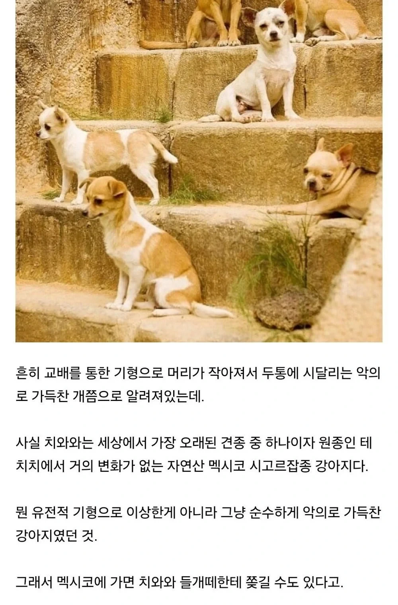

https://cafe.daum.net/dotax/Elgq/4787348?svc=cafeapi

https://cafe.daum.net/dotax/Elgq/4787348?svc=cafeapi

식인을 하던 습성이 있눈건가?
그냥 작고 약하니 방어기제가 있는거여
솔직히 못생겨서 멕시코 사람들도 별로 자랑스러워 할 것 같진 않은 비주얼이라고 느낌. 성격적으로도 그렇고
치와와면 씹네임드 견종인데 그럴수가 있나
아주 드문 확률로 정신적 장애나 뭐 그런거 때문에 착하고 느긋한 성격의 치와와가 탄생하는 경우가 있는데... 존나 귀여움.
장모나 블랙탄은 꽤 온순한편
그런애들은 꼭 혓바닥 삐죽 튀어나오더랔ㅋㅋ
지명을 따서 종명을 붙인 강아지는 보통 잔병없이 오래 산다 한다.
다만 성격은 보장하지 못한다... (달마시안,치와와 등등)
진돗개
요크셔테리어?
샴
https://www.lot-art.com/auction-lots/Fine-Colima-Redware-Dog-Effigy-Vessel/67a-fine_colima-14.11.19-artemi
기원전 치와와 조각상에서도 으르렁대고있음
기여워
ㅋㅋㅋㅋㅋㅋㅋㅋㅋㅋㅋ
남아도는 사람고기 먹어서 그런거였냐고..
인강 시체를 존나 먹고 자라서 그런가
어떻게 그런 성질머리로 개체를 유지했지
전혀 실제 위협이 안되니까
조그만한게 같잖게 으르렁 거리면 귀엽긴하지ㅋㅋ
난 얘들 앙앙앙 ~ 짖는거 가소로워서 귀엽던데 ... ㅋㅋㅋ
앙앙 보단 으르르 거리는애들이 더 많을걸?
그래도 쪼그마한게 그러니 위협으로 안느껴짐 .... 오히려 귀여움 ㅋㅋ
와와햄;;
와와햄
들개떼 습격 받으면 탭댄스 두다다다다 춰야겠군
치와와들개떼라니 너무무섭다
치와와 들개떼 ㅋㅋㅋㅋㅋㅋ
유전적 기형도 있긴 있어
오래된 견종은 맞는데, 표준적인 머리 형상을 애플헤드, 튀어나온 눈으로 책정하다보니 그런식으로 교배되면서
눈에 오는 기형이나 안구 건조증이 심한 개체들이 많아졌음
그리고 두개골의 형태도 실제로 아기처럼 천공이 있는 경우가 많음. 이게 개를 사납게 만들지는 않는데, 여기서 나오는 파생 유전병으로 뇌수종이 오는 개체들이 많음.
뇌수종이 오면 뇌압이 올라서 두통이 많아지고, 사나워짐. 상대적으로 사나운 개체가 많은 이유ㅇㅁ
태생부터 순혈 데몬블러드 였네
아즈텍에서 배웠나보네
자연산 악이라는 거네
치와와가 지랄견이라고 하는데 존나 처맛으니깐 순해지더라 지랄마저 귀엽다고 오냐오냐 키워서 그런거더라 지인집 치와와 처맞고 순해진 스토리 주인 본인 입으로 들으니 신선하더라ㅋㅋㅋㅋㅋㅋㅋㅋ
치와와 치악력도 존나 하찮아서 달라들어도 하나도 안 무서움ㅋㅋ
테치 테치치~
발로차~ 발로차~
와와옹ㅇㅍ와오엉
그냥 인간의 잘못이라고 생각할게
그럼 그냥 미친견이란 말이냐
치와와는 물려도 안아프지?
얘네는 크기가 작아서 먹을게없으니 살아남은게 아닐까 싶음
크기 컸으면 아즈텍 사람들한테 다 잡아먹혔을것
그냥 타고냐 성격이 지랄맞았던것!